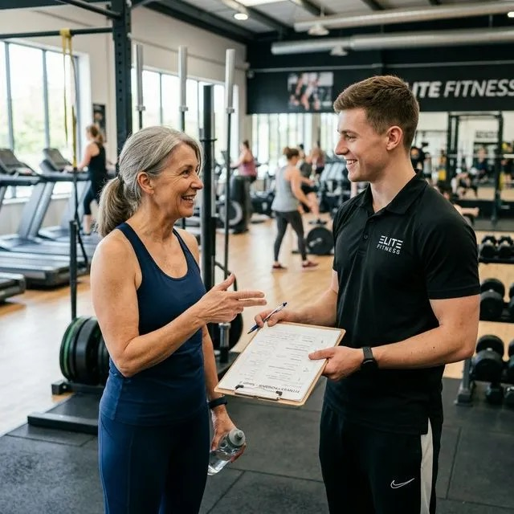
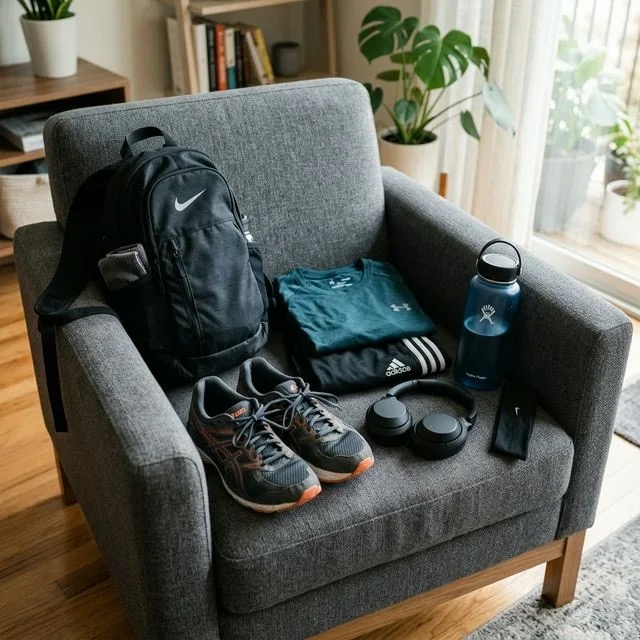

Masz ponad 50 lat i myślisz o siłowni. Albo już o niej myślisz od jakiegoś czasu, ale coś Cię powstrzymuje. Wiek? Wstyd? Poczucie, że to nie miejsce dla Ciebie? Ten artykuł jest właśnie dla Ciebie — i obiecuję, że po jego przeczytaniu te bariery będą wyglądać znacznie mniej groźnie.
Szybka odpowiedź
Start na siłowni po 50-tce powinien być prosty: 2-3 treningi tygodniowo, ruchy podstawowe i umiarkowane obciążenia. Przez pierwsze 4 tygodnie skup się na technice i regularności, nie na rekordach. Jeśli po sesji ból stawów utrzymuje się ponad 48 godzin, zmniejsz ciężar i skróć liczbę serii.
Kluczowe wnioski
Bezpieczny start opiera się na nauce techniki, umiarkowanej objętości i zapisywaniu obciążeń.
- Zacznij od 2–3 treningów całego ciała tygodniowo, rozdzielonych dniem odpoczynku.
- Przez pierwszy miesiąc zwiększaj najpierw kontrolę ruchu i liczbę powtórzeń, dopiero później ciężar.
- Ból stawu podczas ćwiczenia jest sygnałem do przerwania serii i korekty, a nie testem charakteru.
Co daje trening siłowy po 50-tce?
Najbardziej bezpośrednim efektem jest poprawa siły i wykonania codziennych zadań: wstawania, noszenia zakupów, wejścia po schodach i odzyskania równowagi. Jeśli brakuje Ci rozpędu do pierwszej wizyty, połącz ten plan z konkretnym terminem oraz prostą zasadą z tekstu o motywacji do ćwiczeń po 50-tce.
Trening oporowy może wspierać masę mięśniową, kości, glikemię i sprawność, ale wielkość efektu zależy od programu, zdrowia i regularności. Nie obiecujemy jednego procentu redukcji niepełnosprawności ani „przyspieszenia metabolizmu”. Pierwszy cel to wykonanie tych samych ruchów pewniej niż cztery tygodnie wcześniej.
Prawda o siłowni, której nikt Ci nie powie?
Niepewność przed pierwszą wizytą jest normalna, ale można ją ograniczyć organizacyjnie. Wybierz spokojniejszą porę, poproś obsługę o pokazanie szatni i maszyn, a pierwszy trening zapisz wcześniej na kartce. Dzięki temu nie musisz improwizować między stanowiskami i łatwiej skupisz się na technice.
Nie da się zagwarantować zachowania innych osób, ale możesz ograniczyć stres: wybierz mniej zatłoczoną godzinę, przygotuj kolejność maszyn i poproś obsługę o pomoc. Zwykle ludzie koncentrują się na własnym planie. Jeśli atmosfera klubu Ci nie odpowiada, sprawdź inną porę lub miejsce; przeczytaj też, dlaczego siłownia po 50-tce może być przestrzenią dla zwykłych ludzi.
Pierwszy krok: trener personalny — jeden raz wystarczy?
Na pierwszą wizytę umów instruktaż z trenerem lub pracownikiem sali. Poproś o ustawienie pięciu podstawowych wzorców: przysiadu do ławki, przyciągania, wypychania, zawiasu biodrowego i noszenia ciężaru. Jedna sesja może wystarczyć do poznania sprzętu, ale technikę warto ponownie sprawdzić po kilku treningach.
Instruktaż ma nauczyć obsługi sprzętu, ustawienia pozycji i rozpoznania odpowiedniego ciężaru w pięciu–sześciu ruchach. Jedna sesja wystarczy czasem do orientacji na sali, nie do utrwalenia każdej techniki. Nagraj za zgodą jedną serię lub umów krótką kontrolę po kilku treningach. Sprawdź też największe błędy początkujących po 50-tce.

Co powiedzieć trenerowi? Dosłownie to:
Trener powinien zapytać o doświadczenie, objawy, choroby, leki i cel oraz wyjaśnić sposób progresji. Jeśli pierwsza sesja ignoruje zgłoszony ból lub wymusza intensywne ćwiczenia bez przygotowania, przerwij ją i poproś o spokojniejszy plan albo inną osobę prowadzącą.
Ubierz się tak, żeby dobrze się czuć?
Strój ma przede wszystkim nie ograniczać przysiadu, skłonu ani ruchu ramion. Wybierz stabilne obuwie z podeszwą, która nie zapada się pod obciążeniem, oraz ubranie pozwalające trenerowi ocenić ustawienie kolan i pleców. Koszt i marka nie poprawiają techniki, więc na start wykorzystaj wygodny zestaw, który już masz.
Nie potrzebujesz nowej garderoby. Sprawdź tylko, czy materiał nie blokuje ruchu, kieszenie są puste, a sznurówki i nogawki nie zahaczają o sprzęt. Na zajęciach wystarczy czysty, wygodny strój zgodny z regulaminem klubu.

Inwestycja minimalna na start:
- Stabilne obuwie — do ćwiczeń stojących wybierz podeszwę, która nie kołysze się pod obciążeniem. Nie ma jednego obowiązkowego typu buta; przy bólu stopy lub stawu skonsultuj dobór zamiast maskować objaw.
- Dwie pary wygodnych spodni sportowych, które nie krępują ruchów przy przysiadach i wykrokach.
- Wygodna koszulka — bawełna i materiały techniczne są dopuszczalne; wybierz to, co nie obciera i pozwala swobodnie ruszać ramionami.
Strój ma usuwać praktyczne przeszkody, nie budować poczucie, że musisz wyglądać sportowo. O jakości treningu decydują wykonane serie, technika i regularność.
Plan na pierwsze 4 tygodnie — prosty jak budowa cepa?
Przez cztery tygodnie powtarzaj ten sam krótki zestaw, aby nauczyć się ruchów i porównać reakcję organizmu. Zacznij od dwóch sesji; trzecią dodaj tylko wtedy, gdy między treningami odzyskujesz swobodę ruchu i energię. Zapisuj ćwiczenie, ciężar, powtórzenia oraz ból w skali 0–10.
Twój plan na pierwszy miesiąc:
- 2–3 razy w tygodniu — z co najmniej jednym dniem odpoczynku między treningami całego ciała.
- Około 30–45 minut — wystarczy na krótki zestaw; nie jest to sztywny limit medyczny.
- Ciężar z zapasem — zakończ serię, gdy technika zaczyna się pogarszać, zamiast dążyć do upadku mięśniowego.
- Przerwy między seriami 90-120 sekund — mięśnie i stawy potrzebują regeneracji między ćwiczeniami.
Ważna różnica: przejściowa tkliwość mięśni może pojawić się po nowym bodźcu, ale nie jest koniecznym dowodem dobrego treningu. Ostry ból, narastający obrzęk, utrata siły, ból w klatce lub objaw utrzymujący się mimo zmniejszenia obciążenia wymagają przerwania ćwiczenia i odpowiedniej konsultacji. Zobacz też najczęstsze błędy początkujących.
Co zabrać na pierwszą wizytę?
Spakuj rzeczy, które rozwiązują konkretne problemy pierwszego treningu: wodę, ręcznik, kłódkę wymaganą przez klub i notatkę z planem. Telefon może służyć jako dziennik, ale wyłącz powiadomienia, żeby nie wydłużać przerw. Sprawdź wcześniej regulamin obuwia i ręczników, bo różni się między klubami.
- Butelka wody — ilość zależy od czasu, temperatury, potliwości i zaleceń medycznych; przy krótkiej sesji nie ma obowiązkowego litra.
- Ręcznik — zabierz go, jeśli wymaga tego regulamin klubu lub chcesz przykrywać tapicerkę maszyny.
- Słuchawki — własna muzyka zmienia atmosferę i poziom koncentracji.
- Telefon albo kartka — zapisz ćwiczenie, ciężar, serie, powtórzenia i ważne objawy, aby porównać kolejne sesje.
- Plan ćwiczeń — kolejność, serie i ciężary zapisane przed wejściem ograniczają przypadkowe decyzje.
Czego nie potrzebujesz: suplementu przedtreningowego. Kofeina może podnosić ciśnienie, zaburzać sen i komplikować ocenę reakcji na wysiłek. Nie ma jednak medycznej granicy „minimum miesiąca”.
Jedna rzecz, której się nie spodziewasz?
Po kilku tygodniach pierwszym mierzalnym postępem zwykle nie jest duża zmiana sylwetki. Łatwiej rozpoznać go po płynniejszym wykonaniu ruchu, mniejszym zmęczeniu po tej samej sesji albo dodatkowym powtórzeniu z zachowaniem techniki. To te sygnały uzasadniają małe zwiększenie obciążenia.
Nie każdy polubi siłownię i nie jest to warunek sukcesu. Jeśli po czterech tygodniach plan jest niewygodny, zmień porę, klub, ćwiczenia albo wybierz trening domowy. Celem jest trwały bodziec siłowy, nie przywiązanie do konkretnego budynku.
Podsumowanie — co naprawdę stoi na drodze?
Najczęstsze bariery da się nazwać: brak planu, obawa przed oceną, zbyt ciężki pierwszy trening albo grafik, którego nie da się utrzymać. Wybierz dwa stałe terminy na cztery tygodnie, przygotuj ten sam zestaw ćwiczeń i oceniaj wykonanie, nie rekord. To wystarczy, by sprawdzić, czy rutyna działa.
Wiek nie określa wyjściowej sprawności. Zacznij od tego, co potrafisz dziś, i porównuj się z własnym zapisem po czterech tygodniach. Pierwsza wizyta usuwa niepewność organizacyjną, ale utrzymanie planu wymaga stałych terminów, rozsądnej dawki i korekty przeszkód.
Zobacz też: jeśli chcesz poszerzyć temat, zajrzyj do tekstów o planie treningu 3x30 po 50-tce, siedmiu błędach na siłowni po 50-tce, planie podciągania po 50-tce i powrocie do formy po 50-tce. Te materiały dobrze uzupełniają ten wątek i pomagają przełożyć wiedzę na codzienną praktykę.
Plan startowy, ćwiczenia, progresję i zasady bezpieczeństwa znajdziesz w Centrum Treningu Siłowego po 50-tce.
Źródła
Zalecenia oparto na wytycznych aktywności dla starszych dorosłych i badaniach treningu oporowego.
- [1] WHO Europe - Physical activity fact sheet.
- [2] CDC - Physical activity guidelines for older adults.
- [3] Hart P.D. et al. Resistance training and functional outcomes in older adults.
- [4] National Institute on Aging — Exercise and physical activity.
- [5] Franco M.R. et al. Older people's perspectives on participation in physical activity.
Najczęściej zadawane pytania
Odpowiedzi dotyczą pierwszych czterech tygodni: liczby sesji, instruktażu, zapisu progresu i objawów wymagających konsultacji.
Jak zacząć siłownię po 50, jeśli nigdy nie ćwiczyłem?
Najlepiej od prostego planu całego ciała 2-3 razy w tygodniu i nauki techniki na podstawowych ruchach. Na starcie liczy się regularność i bezpieczeństwo, nie ciężar.
Ile razy w tygodniu ćwiczyć siłowo po 50?
Dla większości dobrym początkiem są 2-3 treningi tygodniowo z dniem przerwy między sesjami. Taki rytm zwykle pozwala progresować bez przemęczenia.
Czy po 50 trzeba robić inne ćwiczenia niż młodsi?
Baza ćwiczeń jest podobna, ale większy nacisk kładzie się na technikę, mobilność, kontrolę obciążenia i regenerację.
Jak wdrożyć to po 50-tce krok po kroku?
Ustal dwa terminy, poznaj pięć ruchów na instruktażu i przez cztery tygodnie zapisuj ciężar, powtórzenia oraz dolegliwości. Dopiero wtedy zmieniaj plan.
Zobacz też:trening 3×30 po 50-tce jako prosty plan wejścia w regularność. i kompletny przewodnik powrotu do formy.
Jeśli wolisz zacząć od ruchu w terenie, dobrym uzupełnieniem jest nordic walking po 50-tce: technika, kije i bezpieczny start.